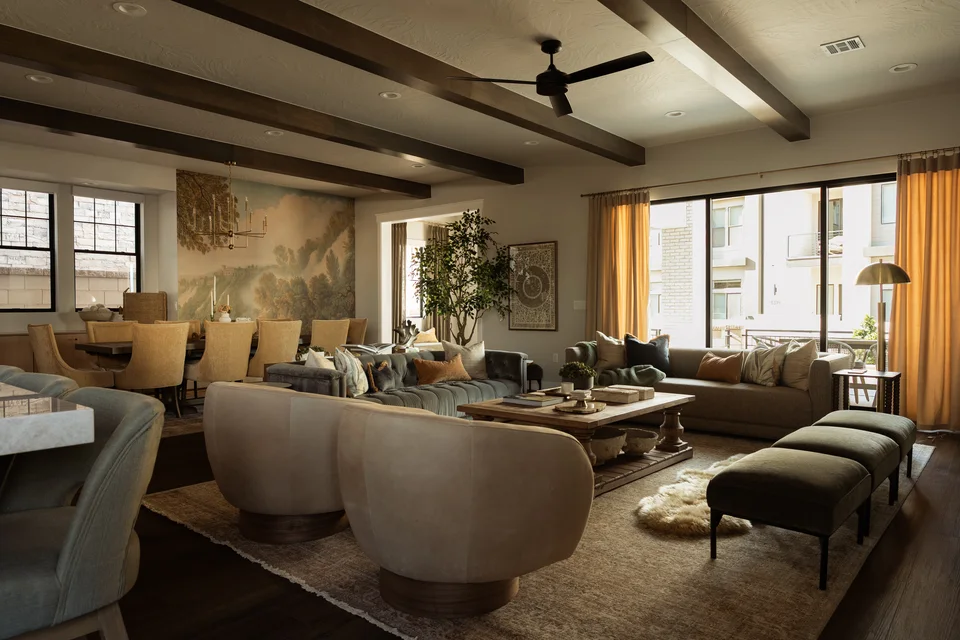
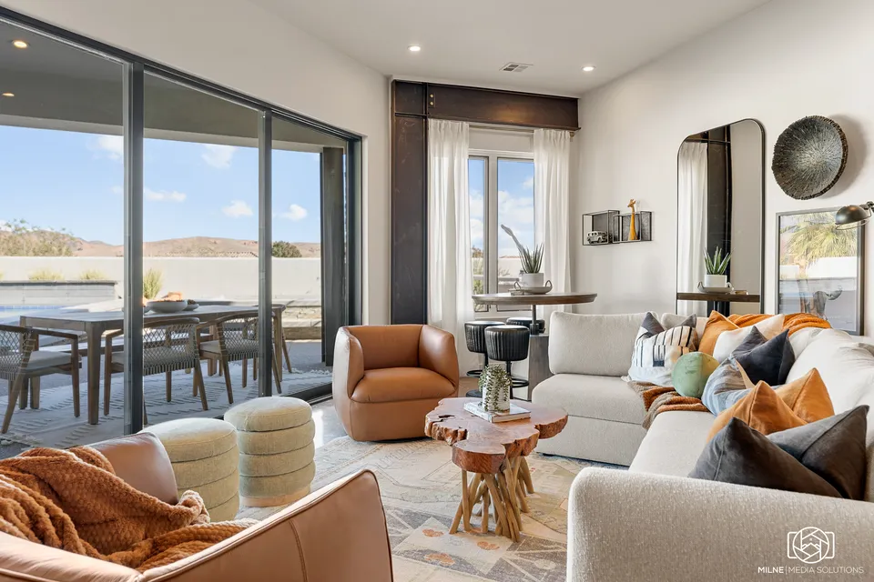
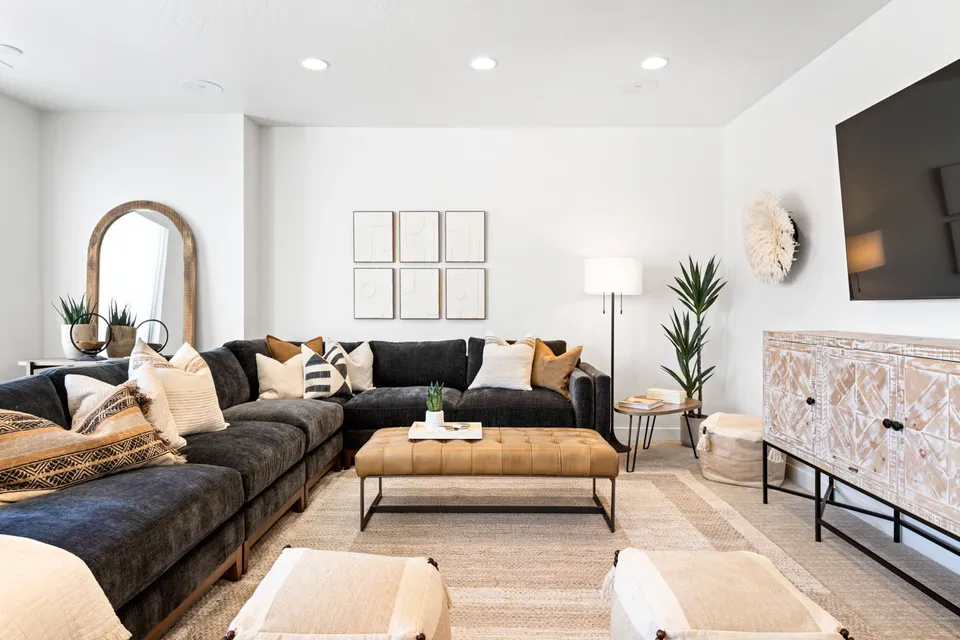

Transport
The home creates an immediate separation from everyday life, helping everyone slow down, settle in, and feel like they have arrived somewhere special.
Vacation home interior design
We design private vacation homes that bring the people you love together and create the setting for lasting memories.
A vacation home is more than just a beautiful place to stay. It is the container for memories your loved ones will cherish forever.
The home creates an immediate separation from everyday life, helping everyone slow down, settle in, and feel like they have arrived somewhere special.
Gathering spaces make it natural for the group to cook, eat, talk, play, celebrate, and spend meaningful time together—the moments that become lasting memories.
Thoughtful spaces for rest, privacy, accessibility, and individual comfort help everyone feel at ease and enjoy their time together.
Design levers
Creating a memorable vacation home doesn’t just mean making it look good. It also means considering how the home feels, functions, and supports the people who use it.
Feel sets the emotional tone of the experience. A beautiful space helps you and your loved ones feel calm, comfortable, and transported out of everyday life, so you can be fully present with one another. Those are the moments that become lasting memories.
Function is what allows the home to support time together. It means designing around how people actually gather, move, cook, play, and relax, so the layout brings the group together instead of dividing them into disconnected spaces.
Friction is anything that pulls people out of the experience. Anticipating those small points of resistance keeps time at the home feeling effortless and allows everyone to stay focused on the people and moments that matter.
Selected work
A few examples of how we turn vacation homes into finished spaces designed to bring people together and create lasting memories.

A richly layered vacation home with generous gathering spaces designed for time with family, friends, and guests.
View project
A warm, collected home shaped by sculptural forms, natural materials, and details that feel grounded in the surrounding landscape.
View project
A bright vacation home with layered gathering spaces, comfortable bedrooms, and outdoor areas designed for time together.
View projectOur process
From the first conversation through the final reveal, we lead your vacation property through seven distinct stages.
Initial fit assessment
We begin with a conversation about the property, your goals, the scope, and what you need from a design partner to determine whether the project is a strong fit.
Mutual commitment
If the fit is mutual, we confirm the scope of work and formalize our agreement to move forward together.
Designer call + profiles
After the agreement, you meet with your designer to build on what we learned during discovery and provide the additional information needed to create your property’s style profile and guest profile.
Complete design direction
You receive complete design boards that bring the full direction for your property into view.
Ordering + receiving
We procure the items specified in the design and manage ordering, tracking, receiving, inspection, and the issues that inevitably arise along the way.
Placement + coordination
We manage movers, handymen, and other trades as every item is placed and styled according to design principles and installation best practices.
The finished property
You walk into the completed vacation property and experience the finished home for the first time.
“I can’t stop looking around with a big smile on my face.”CharReese Bradshaw · 1584 Design client
Our best vacation-home projects happen when owners care deeply about the time they’ll spend there with the people they love, trust professional design expertise, and are ready to delegate the hundreds of decisions required to bring the home together.
As early as practical. Early involvement gives us more influence over space planning, budget allocation, lead times, and the details that make the finished home feel cohesive.
If the property is designed primarily around your own family and friends, the vacation-home path is still the right one. We can account for occasional guests without letting rental considerations define the home.
You provide the personal context and react to curated directions. We manage the detailed sourcing, ordering, coordination, installation, and styling.
Yes. We are based in St. George and serve the Zion corridor and Las Vegas, with select vacation-home projects accepted nationwide.
Tell us about the property, how you hope to use it, and what you want it to feel like. We will assess whether the project is a strong fit.